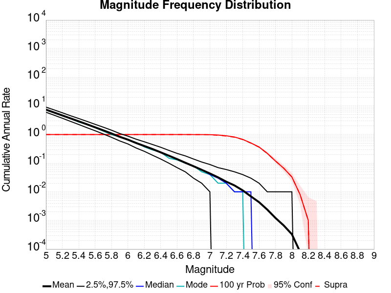
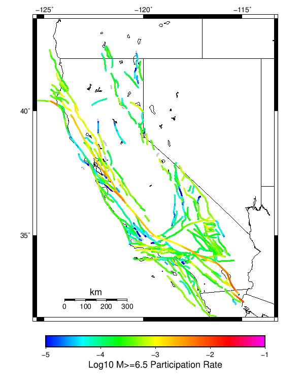
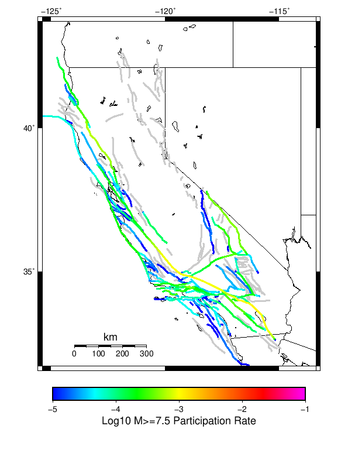
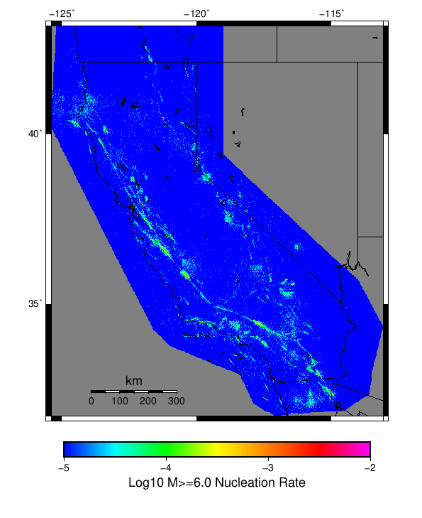

Start 1919, 100 yr, Spontaneous, Historical Catalog Results
| Start 1919, 100 yr, Spontaneous, Historical Catalog |
|---|
| Num Simulations | 847 (incomplete) |
| Start Time | 1919/01/01 00:00:00 UTC |
| Start Time Epoch Milliseconds | -1609459200000 |
| Duration | 100 Years |
| Includes Spontaneous? | true |
| Trigger Ruptures | (none) |
| Historical Ruptures | 165 Trigger Ruptures |
| First: M7.3 at 1852/01/05 04:40:39 UTC |
| Last: M6.5 at 1918/07/15 00:24:39 UTC |
| Largest: M7.9 at 1857/01/09 16:25:39 UTC |
| Config Generated With | u3etas_config_builder.sh --start-year 1919 --num-simulations 1000 --duration-years 100 --include-spontaneous --historical-catalog --hpc-site USC_HPC --nodes 36 --hours 24 --queue scec |
Table Of Contents
Magnitude Frequency Distribution
(top)
Legend
- Mean (thick black line): mean annual rate across all 847 catalogs
- 2.5%,97.5% (thin black lines): annual rate percentiles across all 847 catalogs
- Median (thin blue line): median annual rate across all 847 catalogs
- Mode (thin cyan line): modal annual rate across all 847 catalogs (scaled to annualized value)
- 100 yr Probability (thin red line): 100 year probability calculated as the fraction of catalogs with at least 1 occurrence
- 100 yr Supraseismogenic Probability (thin dashed red line): same as above, but only for supraseismogenic ruptures on explicitly modeled UCERF3 faults
- 95% Conf (light red shaded region): binomial 95% confidence bounds on probability

| Mag | Mean | 2.5 %ile | 97.5 %ile | Median | Mode | 100 yr Probability | 100 yr Supra-Seis Prob |
|---|
| M≥5 | 7.436 | 6.030 | 9.110 | 7.380 | 7.350 | 1.000 (100.00%) | 1.000 (100.00%) |
| M≥5.1 | 5.887 | 4.760 | 7.250 | 5.850 | 5.800 | 1.000 (100.00%) | 1.000 (100.00%) |
| M≥5.2 | 4.658 | 3.730 | 5.770 | 4.620 | 4.330 | 1.000 (100.00%) | 1.000 (100.00%) |
| M≥5.3 | 3.679 | 2.900 | 4.570 | 3.650 | 3.630 | 1.000 (100.00%) | 1.000 (100.00%) |
| M≥5.4 | 2.903 | 2.270 | 3.640 | 2.880 | 2.780 | 1.000 (100.00%) | 1.000 (100.00%) |
| M≥5.5 | 2.286 | 1.750 | 2.890 | 2.270 | 2.210 | 1.000 (100.00%) | 1.000 (100.00%) |
| M≥5.6 | 1.793 | 1.370 | 2.280 | 1.770 | 1.740 | 1.000 (100.00%) | 1.000 (100.00%) |
| M≥5.7 | 1.405 | 1.050 | 1.810 | 1.400 | 1.310 | 1.000 (100.00%) | 1.000 (100.00%) |
| M≥5.8 | 1.094 | 0.810 | 1.420 | 1.090 | 1.060 | 1.000 (100.00%) | 1.000 (100.00%) |
| M≥5.9 | 0.838 | 0.620 | 1.090 | 0.830 | 0.890 | 1.000 (100.00%) | 1.000 (100.00%) |
| M≥6 | 0.666 | 0.470 | 0.880 | 0.660 | 0.660 | 1.000 (100.00%) | 1.000 (100.00%) |
| M≥6.1 | 0.510 | 0.350 | 0.700 | 0.510 | 0.530 | 1.000 (100.00%) | 1.000 (100.00%) |
| M≥6.2 | 0.400 | 0.270 | 0.560 | 0.390 | 0.370 | 1.000 (100.00%) | 1.000 (100.00%) |
| M≥6.3 | 0.313 | 0.200 | 0.450 | 0.310 | 0.270 | 1.000 (100.00%) | 1.000 (100.00%) |
| M≥6.4 | 0.240 | 0.140 | 0.360 | 0.240 | 0.240 | 1.000 (100.00%) | 1.000 (100.00%) |
| M≥6.5 | 0.183 | 0.100 | 0.280 | 0.180 | 0.180 | 1.000 (100.00%) | 1.000 (100.00%) |
| M≥6.6 | 0.139 | 0.070 | 0.220 | 0.140 | 0.130 | 1.000 (100.00%) | 1.000 (100.00%) |
| M≥6.7 | 0.104 | 0.050 | 0.180 | 0.100 | 0.110 | 1.000 (100.00%) | 1.000 (100.00%) |
| M≥6.8 | 0.079 | 0.030 | 0.140 | 0.080 | 0.080 | 1.000 (100.00%) | 0.999 (99.88%) |
| M≥6.9 | 0.059 | 0.020 | 0.110 | 0.060 | 0.050 | 0.999 (99.88%) | 0.996 (99.65%) |
| M≥7 | 0.044 | 0.010 | 0.090 | 0.040 | 0.040 | 0.994 (99.41%) | 0.985 (98.47%) |
| M≥7.1 | 0.032 | 0.000 | 0.070 | 0.030 | 0.020 | 0.965 (96.46%) | 0.948 (94.81%) |
| M≥7.2 | 0.023 | 0.000 | 0.060 | 0.020 | 0.010 | 0.907 (90.67%) | 0.883 (88.31%) |
| M≥7.3 | 0.016 | 0.000 | 0.040 | 0.010 | 0.010 | 0.822 (82.17%) | 0.806 (80.64%) |
| M≥7.4 | 0.011 | 0.000 | 0.040 | 0.010 | 0.010 | 0.675 (67.53%) | 0.666 (66.59%) |
| M≥7.5 | 6.85E-3 | 0.000 | 0.030 | 0.010 | 0.000 | 0.510 (51.00%) | 0.504 (50.41%) |
| M≥7.6 | 4.30E-3 | 0.000 | 0.020 | 0.000 | 0.000 | 0.365 (36.48%) | 0.362 (36.25%) |
| M≥7.7 | 2.41E-3 | 0.000 | 0.010 | 0.000 | 0.000 | 0.224 (22.43%) | 0.223 (22.31%) |
| M≥7.8 | 1.22E-3 | 0.000 | 0.010 | 0.000 | 0.000 | 0.118 (11.81%) | 0.118 (11.81%) |
| M≥7.9 | 6.85E-4 | 0.000 | 0.010 | 0.000 | 0.000 | 0.068 (6.85%) | 0.068 (6.85%) |
| M≥8 | 3.42E-4 | 0.000 | 0.010 | 0.000 | 0.000 | 0.034 (3.42%) | 0.034 (3.42%) |
| M≥8.1 | 8.26E-5 | 0.000 | 0.000 | 0.000 | 0.000 | 8.26E-3 (0.83%) | 8.26E-3 (0.83%) |
| M≥8.2 | 1.18E-5 | 0.000 | 0.000 | 0.000 | 0.000 | 1.18E-3 (0.12%) | 1.18E-3 (0.12%) |
| M≥8.3 | 0.000 | 0.000 | 0.000 | 0.000 | 0.000 | 0.000 (0.00%) | 0.000 (0.00%) |
| M≥8.4 | 0.000 | 0.000 | 0.000 | 0.000 | 0.000 | 0.000 (0.00%) | 0.000 (0.00%) |
| M≥8.5 | 0.000 | 0.000 | 0.000 | 0.000 | 0.000 | 0.000 (0.00%) | 0.000 (0.00%) |
| M≥8.6 | 0.000 | 0.000 | 0.000 | 0.000 | 0.000 | 0.000 (0.00%) | 0.000 (0.00%) |
| M≥8.7 | 0.000 | 0.000 | 0.000 | 0.000 | 0.000 | 0.000 (0.00%) | 0.000 (0.00%) |
| M≥8.8 | 0.000 | 0.000 | 0.000 | 0.000 | 0.000 | 0.000 (0.00%) | 0.000 (0.00%) |
| M≥8.9 | 0.000 | 0.000 | 0.000 | 0.000 | 0.000 | 0.000 (0.00%) | 0.000 (0.00%) |
| M≥9 | 0.000 | 0.000 | 0.000 | 0.000 | 0.000 | 0.000 (0.00%) | 0.000 (0.00%) |
Long Term Rate Variability
(top)
80 Year Variability
(top)

Download CSV Here
| Magnitude | Mean | Median | Mode | Std. Dev. | 2.5 %-ile | 16 %-ile | 84 %-ile | 97.5 %-ile |
|---|
| 5.0 | 7.437795 | 7.3625 | 6.925 | 0.8532128 | 6.0 | 6.6 | 8.2875 | 9.25 |
| 5.1 | 5.8873672 | 5.825 | 5.925 | 0.6980976 | 4.6625 | 5.2 | 6.6125 | 7.4 |
| 5.2 | 4.6561985 | 4.625 | 4.5 | 0.5670768 | 3.6375 | 4.0875 | 5.2125 | 5.8625 |
| 5.3 | 3.676771 | 3.65 | 3.6875 | 0.47005227 | 2.825 | 3.2 | 4.125 | 4.675 |
| 5.4 | 2.901771 | 2.8875 | 2.925 | 0.38607392 | 2.1875 | 2.525 | 3.275 | 3.7625 |
| 5.5 | 2.2864375 | 2.2625 | 2.325 | 0.3184243 | 1.6875 | 1.975 | 2.5875 | 2.975 |
| 5.6 | 1.7947019 | 1.7875 | 1.8 | 0.26183105 | 1.3125 | 1.5375 | 2.0375 | 2.35 |
| 5.7 | 1.4066854 | 1.4 | 1.4 | 0.2112599 | 1.0375 | 1.2 | 1.6125 | 1.8625 |
| 5.8 | 1.0965466 | 1.0875 | 1.0625 | 0.17596479 | 0.7625 | 0.925 | 1.25 | 1.475 |
| 5.9 | 0.8396399 | 0.8375 | 0.7625 | 0.14412384 | 0.5875 | 0.7 | 0.975 | 1.15 |
| 6.0 | 0.6668831 | 0.6625 | 0.6375 | 0.1211896 | 0.4625 | 0.55 | 0.7875 | 0.925 |
| 6.1 | 0.50945985 | 0.5 | 0.4875 | 0.101514004 | 0.325 | 0.4125 | 0.6 | 0.725 |
| 6.2 | 0.39942443 | 0.3875 | 0.3875 | 0.08704416 | 0.25 | 0.3125 | 0.4875 | 0.5875 |
| 6.3 | 0.31301653 | 0.3 | 0.2875 | 0.07286353 | 0.1875 | 0.25 | 0.3875 | 0.4625 |
| 6.4 | 0.23977272 | 0.2375 | 0.225 | 0.06190318 | 0.1375 | 0.175 | 0.3 | 0.375 |
| 6.5 | 0.18271841 | 0.175 | 0.1875 | 0.053359475 | 0.1 | 0.125 | 0.2375 | 0.3 |
| 6.6 | 0.13783944 | 0.1375 | 0.1375 | 0.04539274 | 0.0625 | 0.1 | 0.175 | 0.2375 |
| 6.7 | 0.10267119 | 0.1 | 0.1 | 0.03913006 | 0.0375 | 0.0625 | 0.1375 | 0.1875 |
| 6.8 | 0.07756789 | 0.075 | 0.0625 | 0.032797825 | 0.025 | 0.05 | 0.1125 | 0.15 |
| 6.9 | 0.057762694 | 0.05 | 0.05 | 0.02781621 | 0.0125 | 0.025 | 0.0875 | 0.1125 |
| 7.0 | 0.0425915 | 0.0375 | 0.0375 | 0.023852486 | 0.0 | 0.025 | 0.0625 | 0.1 |
| 7.1 | 0.030873671 | 0.025 | 0.025 | 0.02034436 | 0.0 | 0.0125 | 0.05 | 0.075 |
| 7.2 | 0.021679457 | 0.025 | 0.0125 | 0.016794886 | 0.0 | 0.0 | 0.0375 | 0.0625 |
| 7.3 | 0.015540142 | 0.0125 | 0.0125 | 0.013885259 | 0.0 | 0.0 | 0.025 | 0.05 |
| 7.4 | 0.010330578 | 0.0125 | 0.0 | 0.011511503 | 0.0 | 0.0 | 0.025 | 0.0375 |
| 7.5 | 0.006198347 | 0.0 | 0.0 | 0.008613803 | 0.0 | 0.0 | 0.0125 | 0.025 |
| 7.6 | 0.0037632822 | 0.0 | 0.0 | 0.006605284 | 0.0 | 0.0 | 0.0125 | 0.025 |
| 7.7 | 0.0019923258 | 0.0 | 0.0 | 0.004736771 | 0.0 | 0.0 | 0.0 | 0.0125 |
| 7.8 | 8.4120425E-4 | 0.0 | 0.0 | 0.0031919284 | 0.0 | 0.0 | 0.0 | 0.0125 |
| 7.9 | 4.1322314E-4 | 0.0 | 0.0 | 0.0022361663 | 0.0 | 0.0 | 0.0 | 0.0125 |
| 8.0 | 1.6233766E-4 | 0.0 | 0.0 | 0.001416063 | 0.0 | 0.0 | 0.0 | 0.0 |
| 8.1 | 2.9515939E-5 | 0.0 | 0.0 | 6.070528E-4 | 0.0 | 0.0 | 0.0 | 0.0 |
| 8.2 | 0.0 | 0.0 | 0.0 | 0.0 | 0.0 | 0.0 | 0.0 | 0.0 |
| 8.3 | 0.0 | 0.0 | 0.0 | 0.0 | 0.0 | 0.0 | 0.0 | 0.0 |
| 8.4 | 0.0 | 0.0 | 0.0 | 0.0 | 0.0 | 0.0 | 0.0 | 0.0 |
| 8.5 | 0.0 | 0.0 | 0.0 | 0.0 | 0.0 | 0.0 | 0.0 | 0.0 |
| 8.6 | 0.0 | 0.0 | 0.0 | 0.0 | 0.0 | 0.0 | 0.0 | 0.0 |
| 8.7 | 0.0 | 0.0 | 0.0 | 0.0 | 0.0 | 0.0 | 0.0 | 0.0 |
| 8.8 | 0.0 | 0.0 | 0.0 | 0.0 | 0.0 | 0.0 | 0.0 | 0.0 |
| 8.9 | 0.0 | 0.0 | 0.0 | 0.0 | 0.0 | 0.0 | 0.0 | 0.0 |
| 9.0 | 0.0 | 0.0 | 0.0 | 0.0 | 0.0 | 0.0 | 0.0 | 0.0 |
28 Year Variability
(top)

Download CSV Here
| Magnitude | Mean | Median | Mode | Std. Dev. | 2.5 %-ile | 16 %-ile | 84 %-ile | 97.5 %-ile |
|---|
| 5.0 | 7.4423456 | 7.25 | 6.857143 | 1.3635867 | 5.357143 | 6.142857 | 8.75 | 10.678572 |
| 5.1 | 5.8914094 | 5.75 | 5.821429 | 1.1168379 | 4.178571 | 4.821429 | 6.964286 | 8.571428 |
| 5.2 | 4.660131 | 4.535714 | 4.071429 | 0.9144829 | 3.2142856 | 3.7857144 | 5.535714 | 6.785714 |
| 5.3 | 3.6800613 | 3.607143 | 3.6785715 | 0.7513438 | 2.5 | 2.9642856 | 4.392857 | 5.428571 |
| 5.4 | 2.903764 | 2.8214285 | 2.607143 | 0.61639345 | 1.9285715 | 2.3214285 | 3.5 | 4.321429 |
| 5.5 | 2.2880476 | 2.2142856 | 2.2142856 | 0.51109886 | 1.4642857 | 1.7857143 | 2.7857144 | 3.5 |
| 5.6 | 1.7947236 | 1.75 | 1.7857143 | 0.42283213 | 1.1071428 | 1.3928572 | 2.1785715 | 2.75 |
| 5.7 | 1.4062939 | 1.3571428 | 1.2142857 | 0.3508045 | 0.8214286 | 1.0714285 | 1.75 | 2.1785715 |
| 5.8 | 1.096489 | 1.0714285 | 1.0714285 | 0.29270303 | 0.60714287 | 0.8214286 | 1.3928572 | 1.75 |
| 5.9 | 0.8401782 | 0.8214286 | 0.8214286 | 0.24065958 | 0.42857143 | 0.60714287 | 1.0714285 | 1.3928572 |
| 6.0 | 0.66735536 | 0.64285713 | 0.5714286 | 0.20419554 | 0.32142857 | 0.4642857 | 0.85714287 | 1.1428572 |
| 6.1 | 0.5102884 | 0.5 | 0.4642857 | 0.17313015 | 0.21428572 | 0.35714287 | 0.6785714 | 0.89285713 |
| 6.2 | 0.40041885 | 0.39285713 | 0.35714287 | 0.1494743 | 0.14285715 | 0.25 | 0.53571427 | 0.71428573 |
| 6.3 | 0.3135436 | 0.2857143 | 0.25 | 0.1251689 | 0.10714286 | 0.17857143 | 0.42857143 | 0.60714287 |
| 6.4 | 0.24007702 | 0.21428572 | 0.21428572 | 0.10602587 | 0.071428575 | 0.14285715 | 0.35714287 | 0.4642857 |
| 6.5 | 0.18280205 | 0.17857143 | 0.17857143 | 0.09002602 | 0.035714287 | 0.10714286 | 0.2857143 | 0.39285713 |
| 6.6 | 0.1380362 | 0.14285715 | 0.10714286 | 0.07782361 | 0.0 | 0.071428575 | 0.21428572 | 0.32142857 |
| 6.7 | 0.103010625 | 0.10714286 | 0.071428575 | 0.06524863 | 0.0 | 0.035714287 | 0.17857143 | 0.25 |
| 6.8 | 0.07800641 | 0.071428575 | 0.071428575 | 0.055227514 | 0.0 | 0.035714287 | 0.14285715 | 0.21428572 |
| 6.9 | 0.058244787 | 0.035714287 | 0.035714287 | 0.047440417 | 0.0 | 0.0 | 0.10714286 | 0.17857143 |
| 7.0 | 0.04303705 | 0.035714287 | 0.035714287 | 0.04117538 | 0.0 | 0.0 | 0.071428575 | 0.14285715 |
| 7.1 | 0.031160397 | 0.035714287 | 0.0 | 0.03506645 | 0.0 | 0.0 | 0.071428575 | 0.10714286 |
| 7.2 | 0.02185585 | 0.0 | 0.0 | 0.028866902 | 0.0 | 0.0 | 0.035714287 | 0.10714286 |
| 7.3 | 0.015784 | 0.0 | 0.0 | 0.02424631 | 0.0 | 0.0 | 0.035714287 | 0.071428575 |
| 7.4 | 0.010625738 | 0.0 | 0.0 | 0.01967765 | 0.0 | 0.0 | 0.035714287 | 0.071428575 |
| 7.5 | 0.006409175 | 0.0 | 0.0 | 0.015068668 | 0.0 | 0.0 | 0.035714287 | 0.035714287 |
| 7.6 | 0.0038932927 | 0.0 | 0.0 | 0.011704427 | 0.0 | 0.0 | 0.0 | 0.035714287 |
| 7.7 | 0.002080171 | 0.0 | 0.0 | 0.008425947 | 0.0 | 0.0 | 0.0 | 0.035714287 |
| 7.8 | 8.8547816E-4 | 0.0 | 0.0 | 0.0055544837 | 0.0 | 0.0 | 0.0 | 0.0 |
| 7.9 | 4.638219E-4 | 0.0 | 0.0 | 0.0040443013 | 0.0 | 0.0 | 0.0 | 0.0 |
| 8.0 | 1.8271772E-4 | 0.0 | 0.0 | 0.0025484904 | 0.0 | 0.0 | 0.0 | 0.0 |
| 8.1 | 5.6220837E-5 | 0.0 | 0.0 | 0.0014161622 | 0.0 | 0.0 | 0.0 | 0.0 |
| 8.2 | 0.0 | 0.0 | 0.0 | 0.0 | 0.0 | 0.0 | 0.0 | 0.0 |
| 8.3 | 0.0 | 0.0 | 0.0 | 0.0 | 0.0 | 0.0 | 0.0 | 0.0 |
| 8.4 | 0.0 | 0.0 | 0.0 | 0.0 | 0.0 | 0.0 | 0.0 | 0.0 |
| 8.5 | 0.0 | 0.0 | 0.0 | 0.0 | 0.0 | 0.0 | 0.0 | 0.0 |
| 8.6 | 0.0 | 0.0 | 0.0 | 0.0 | 0.0 | 0.0 | 0.0 | 0.0 |
| 8.7 | 0.0 | 0.0 | 0.0 | 0.0 | 0.0 | 0.0 | 0.0 | 0.0 |
| 8.8 | 0.0 | 0.0 | 0.0 | 0.0 | 0.0 | 0.0 | 0.0 | 0.0 |
| 8.9 | 0.0 | 0.0 | 0.0 | 0.0 | 0.0 | 0.0 | 0.0 | 0.0 |
| 9.0 | 0.0 | 0.0 | 0.0 | 0.0 | 0.0 | 0.0 | 0.0 | 0.0 |
Variability Duration Dependence
(top)

Download CSV Here
| Duration (years) | Mean | Median | Mode | Std. Dev. | 2.5 %-ile | 16 %-ile | 84 %-ile | 97.5 %-ile |
|---|
| 1.0 | 7.4362926 | 6.0 | 5.0 | 5.935406 | 1.0 | 3.0 | 11.0 | 21.0 |
| 2.0 | 7.4362926 | 6.5 | 5.5 | 4.437732 | 2.5 | 4.0 | 10.5 | 18.0 |
| 4.0 | 7.4362926 | 6.75 | 6.0 | 3.3045967 | 3.25 | 4.75 | 9.75 | 15.75 |
| 6.0 | 7.43675 | 7.0 | 6.3333335 | 2.7486525 | 3.8333333 | 5.1666665 | 9.5 | 14.666667 |
| 8.0 | 7.43675 | 7.0 | 6.375 | 2.4324362 | 4.125 | 5.375 | 9.375 | 13.625 |
| 10.0 | 7.4362926 | 7.0 | 6.8 | 2.225826 | 4.4 | 5.5 | 9.3 | 13.3 |
| 12.0 | 7.43675 | 7.0833335 | 6.9166665 | 2.017578 | 4.5833335 | 5.6666665 | 9.083333 | 12.666667 |
| 14.0 | 7.435053 | 7.142857 | 7.142857 | 1.9052039 | 4.714286 | 5.714286 | 9.071428 | 12.214286 |
| 16.0 | 7.43675 | 7.125 | 7.0 | 1.7913129 | 4.8125 | 5.8125 | 9.0 | 11.9375 |
| 18.0 | 7.4359703 | 7.1666665 | 6.9444447 | 1.6836352 | 4.9444447 | 5.9444447 | 8.944445 | 11.666667 |
| 20.0 | 7.4362926 | 7.2 | 7.4 | 1.626393 | 5.0 | 5.95 | 8.9 | 11.4 |
| 22.0 | 7.432744 | 7.181818 | 6.8636365 | 1.5240045 | 5.090909 | 6.0454545 | 8.818182 | 11.227273 |
| 24.0 | 7.43675 | 7.2083335 | 7.0833335 | 1.4849392 | 5.25 | 6.0833335 | 8.791667 | 11.041667 |
| 26.0 | 7.4419065 | 7.230769 | 6.8846154 | 1.4010073 | 5.3076925 | 6.1538463 | 8.730769 | 10.807693 |
| 28.0 | 7.4423456 | 7.25 | 6.857143 | 1.3635867 | 5.357143 | 6.142857 | 8.75 | 10.678572 |
| 30.0 | 7.4359703 | 7.266667 | 6.733333 | 1.3358 | 5.366667 | 6.1666665 | 8.7 | 10.633333 |
| 32.0 | 7.43675 | 7.25 | 6.84375 | 1.30988 | 5.40625 | 6.1875 | 8.65625 | 10.5625 |
| 34.0 | 7.4673414 | 7.2941175 | 7.352941 | 1.2417873 | 5.5 | 6.2647057 | 8.676471 | 10.411765 |
| 36.0 | 7.4545784 | 7.3055553 | 7.2777777 | 1.2326484 | 5.5277777 | 6.25 | 8.694445 | 10.333333 |
| 38.0 | 7.447306 | 7.3157897 | 6.7894735 | 1.198926 | 5.5263157 | 6.2894735 | 8.605263 | 10.236842 |
| 40.0 | 7.437795 | 7.3 | 7.5 | 1.1677302 | 5.55 | 6.325 | 8.575 | 10.15 |
| 42.0 | 7.4423456 | 7.3095236 | 6.452381 | 1.145755 | 5.642857 | 6.3333335 | 8.571428 | 10.047619 |
| 44.0 | 7.432744 | 7.2954545 | 7.590909 | 1.1168214 | 5.6136365 | 6.3636365 | 8.522727 | 9.931818 |
| 46.0 | 7.436836 | 7.304348 | 7.2391305 | 1.1023678 | 5.673913 | 6.3913045 | 8.5 | 9.978261 |
| 48.0 | 7.43675 | 7.2916665 | 7.25 | 1.0861628 | 5.7083335 | 6.3958335 | 8.458333 | 9.916667 |
| 50.0 | 7.4362926 | 7.3 | 7.08 | 1.0688318 | 5.68 | 6.4 | 8.48 | 9.8 |
| 52.0 | 7.5255427 | 7.4423075 | 7.1153846 | 1.025971 | 5.7884617 | 6.519231 | 8.519231 | 9.826923 |
| 54.0 | 7.514474 | 7.4074073 | 7.0925927 | 1.0078933 | 5.759259 | 6.5185184 | 8.518518 | 9.722222 |
| 56.0 | 7.5176044 | 7.428571 | 7.053571 | 0.9968265 | 5.767857 | 6.553571 | 8.535714 | 9.660714 |
| 58.0 | 7.504682 | 7.413793 | 7.2413793 | 0.980392 | 5.775862 | 6.534483 | 8.431034 | 9.637931 |
| 60.0 | 7.4966745 | 7.4166665 | 7.2 | 0.9593955 | 5.75 | 6.5666666 | 8.383333 | 9.633333 |
| 62.0 | 7.4916024 | 7.403226 | 7.532258 | 0.95014626 | 5.7580647 | 6.548387 | 8.370968 | 9.548388 |
| 64.0 | 7.479099 | 7.359375 | 7.15625 | 0.94067955 | 5.75 | 6.5625 | 8.421875 | 9.46875 |
| 66.0 | 7.470162 | 7.3636365 | 7.151515 | 0.9233893 | 5.878788 | 6.5454545 | 8.363636 | 9.484848 |
| 68.0 | 7.4673414 | 7.397059 | 7.7941175 | 0.912986 | 5.9117646 | 6.5735292 | 8.367647 | 9.514706 |
| 70.0 | 7.4612412 | 7.3714285 | 7.0857143 | 0.91398 | 5.857143 | 6.5571427 | 8.357142 | 9.428572 |
| 72.0 | 7.4545784 | 7.375 | 7.361111 | 0.9012797 | 5.9027777 | 6.5833335 | 8.347222 | 9.472222 |
| 74.0 | 7.451339 | 7.3783784 | 7.310811 | 0.8902726 | 5.9324327 | 6.581081 | 8.283784 | 9.405405 |
| 76.0 | 7.447306 | 7.381579 | 7.381579 | 0.8822625 | 5.9473686 | 6.5789475 | 8.289474 | 9.421053 |
| 78.0 | 7.4419065 | 7.3589745 | 7.025641 | 0.8696353 | 5.9615383 | 6.5641026 | 8.294871 | 9.346154 |
| 80.0 | 7.437795 | 7.3625 | 6.925 | 0.8532128 | 6.0 | 6.6 | 8.2875 | 9.25 |
| 82.0 | 7.4384627 | 7.365854 | 7.1829267 | 0.84353006 | 6.0 | 6.621951 | 8.243902 | 9.304878 |
| 84.0 | 7.4423456 | 7.3690476 | 7.7261906 | 0.8284421 | 6.0238094 | 6.6309524 | 8.25 | 9.273809 |
| 86.0 | 7.4352984 | 7.383721 | 7.337209 | 0.81729424 | 6.023256 | 6.627907 | 8.244186 | 9.209302 |
| 88.0 | 7.432744 | 7.3863635 | 6.8863635 | 0.80735505 | 6.0454545 | 6.625 | 8.25 | 9.227273 |
| 90.0 | 7.4359703 | 7.3777776 | 7.411111 | 0.8028609 | 6.0666666 | 6.633333 | 8.244445 | 9.177778 |
| 92.0 | 7.436836 | 7.380435 | 7.021739 | 0.7952142 | 6.0652175 | 6.6630435 | 8.26087 | 9.184783 |
| 94.0 | 7.433357 | 7.382979 | 7.4468083 | 0.7901615 | 6.0851064 | 6.6489363 | 8.212766 | 9.170213 |
| 96.0 | 7.43675 | 7.3854165 | 7.46875 | 0.78493506 | 6.0729165 | 6.65625 | 8.197917 | 9.15625 |
| 98.0 | 7.435053 | 7.377551 | 7.897959 | 0.7790312 | 6.0510206 | 6.663265 | 8.204082 | 9.132653 |
| 100.0 | 7.4362926 | 7.38 | 7.35 | 0.77254647 | 6.03 | 6.67 | 8.19 | 9.11 |
Section Participation
(top)
Section Participation Plots
(top)
| Min Mag | Complete Catalog (including spontaneous) |
|---|
| All Supra. Seis. |  |
| M≥6.5 |  |
| M≥7 |  |
| M≥7.5 |  |
| M≥8 | |
Supra-Seismogenic Parent Sections Table
(top)
First 10 of 313 with matching ruptures shown
| Parent Name | Total Mean Annual Rate | Total 100 Year Prob |
|---|
| San Andreas (Parkfield) | 0.04238489 | 0.99881935 |
| San Andreas (Creeping Section) 2011 CFM | 0.024486423 | 0.9563164 |
| San Andreas (Mojave S) | 0.016115703 | 0.8347107 |
| Mendocino | 0.013683589 | 0.78984654 |
| Cerro Prieto | 0.0118417945 | 0.78748524 |
| Imperial | 0.011322314 | 0.7733176 |
| Brawley (Seismic Zone) alt 1 | 0.010094451 | 0.7390791 |
| Hunting Creek - Berryessa 2011 CFM | 0.00635183 | 0.48170012 |
| Hayward (So) 2011 CFM | 0.0062809917 | 0.5194805 |
| Elsinore (Glen Ivy) rev | 0.0059622196 | 0.46989375 |
M≥6.5 Parent Sections Table
(top)
First 10 of 300 with matching ruptures shown
| Parent Name | Total Mean Annual Rate | Total 100 Year Prob |
|---|
| Cerro Prieto | 0.009893742 | 0.72491145 |
| Imperial | 0.007768595 | 0.6292798 |
| Brawley (Seismic Zone) alt 1 | 0.00729634 | 0.6044864 |
| San Andreas (Creeping Section) 2011 CFM | 0.0064817 | 0.5100354 |
| Mendocino | 0.005253837 | 0.45100355 |
| San Andreas (Coachella) rev | 0.0050767413 | 0.47579694 |
| Hayward (So) 2011 CFM | 0.005029516 | 0.42857143 |
| San Andreas (San Bernardino N) | 0.003742621 | 0.3364817 |
| San Andreas (Mojave S) | 0.0035655254 | 0.31877214 |
| San Andreas (San Gorgonio Pass-Garnet HIll) | 0.0035183 | 0.33766234 |
M≥7 Parent Sections Table
(top)
First 10 of 256 with matching ruptures shown
| Parent Name | Total Mean Annual Rate | Total 100 Year Prob |
|---|
| San Andreas (Coachella) rev | 0.004096812 | 0.39905548 |
| Brawley (Seismic Zone) alt 1 | 0.0036717828 | 0.36127508 |
| Imperial | 0.0036363637 | 0.3577332 |
| Cerro Prieto | 0.0031286895 | 0.29752067 |
| San Andreas (San Gorgonio Pass-Garnet HIll) | 0.0031050767 | 0.30696577 |
| San Andreas (Creeping Section) 2011 CFM | 0.0021369539 | 0.20661157 |
| San Andreas (Cholame) rev | 0.0021251475 | 0.20661157 |
| San Andreas (Carrizo) rev | 0.0020070837 | 0.19244392 |
| Maacama 2011 CFM | 0.001983471 | 0.19598584 |
| San Andreas (Mojave S) | 0.0019126328 | 0.18299882 |
M≥7.5 Parent Sections Table
(top)
First 10 of 184 with matching ruptures shown
| Parent Name | Total Mean Annual Rate | Total 100 Year Prob |
|---|
| San Andreas (Mojave N) | 0.0011806375 | 0.116883114 |
| San Andreas (Coachella) rev | 0.0010979929 | 0.10979929 |
| San Andreas (Big Bend) | 0.0010861865 | 0.108618654 |
| San Andreas (Mojave S) | 0.0010861865 | 0.108618654 |
| San Andreas (San Gorgonio Pass-Garnet HIll) | 0.0010861865 | 0.108618654 |
| San Andreas (Carrizo) rev | 0.0010153482 | 0.10153483 |
| San Andreas (San Bernardino S) | 9.917355E-4 | 0.09917355 |
| San Andreas (Cholame) rev | 9.563164E-4 | 0.095631644 |
| San Andreas (San Bernardino N) | 9.4451004E-4 | 0.094451 |
| Brawley (Seismic Zone) alt 1 | 9.208973E-4 | 0.09208973 |
M≥8 Parent Sections Table
(top)
First 10 of 42 with matching ruptures shown
| Parent Name | Total Mean Annual Rate | Total 100 Year Prob |
|---|
| San Andreas (Big Bend) | 3.305785E-4 | 0.03305785 |
| San Andreas (Carrizo) rev | 3.305785E-4 | 0.03305785 |
| San Andreas (Mojave N) | 3.305785E-4 | 0.03305785 |
| San Andreas (Mojave S) | 3.305785E-4 | 0.03305785 |
| San Andreas (Cholame) rev | 3.0696575E-4 | 0.030696576 |
| San Andreas (San Bernardino N) | 3.0696575E-4 | 0.030696576 |
| San Andreas (Parkfield) | 2.7154663E-4 | 0.027154664 |
| San Andreas (Creeping Section) 2011 CFM | 2.1251476E-4 | 0.021251475 |
| San Andreas (San Bernardino S) | 1.6528925E-4 | 0.016528925 |
| San Andreas (Coachella) rev | 1.5348288E-4 | 0.015348288 |
Gridded Nucleation
(top)
| Min Mag | Complete Catalog (including spontaneous) |
|---|
| M≥5 |  |
| M≥6 |  |
| M≥7 |  |
(top)
{
"numSimulations": 1000,
"duration": 100.0,
"startYear": 1919,
"includeSpontaneous": true,
"randomSeed": 1566932682299,
"binaryOutput": true,
"binaryOutputFilters": [
{
"prefix": "results_complete",
"descendantsOnly": false
},
{
"prefix": "results_m5_preserve_chain",
"minMag": 5.0,
"preserveChainBelowMag": true,
"descendantsOnly": false
}
],
"forceRecalc": false,
"simulationName": "Start 1919, 100 yr, Spontaneous, Historical Catalog",
"numRetries": 3,
"outputDir": "${ETAS_SIM_DIR}/2019_08_27-Start1919_100yr_Spontaneous_HistoricalCatalog-includeSpont-histCatalog-full_td-scale1.14",
"triggerCatalog": "${ETAS_LAUNCHER}/inputs/u3_historical_catalog.txt",
"triggerCatalogSurfaceMappings": "${ETAS_LAUNCHER}/inputs/u3_historical_catalog_finite_fault_mappings.xml",
"treatTriggerCatalogAsSpontaneous": true,
"cacheDir": "${ETAS_LAUNCHER}/inputs/cache_fm3p1_ba",
"fssFile": "${ETAS_LAUNCHER}/inputs/2013_05_10-ucerf3p3-production-10runs_COMPOUND_SOL_FM3_1_SpatSeisU3_MEAN_BRANCH_AVG_SOL.zip",
"probModel": "FULL_TD",
"applySubSeisForSupraNucl": true,
"totRateScaleFactor": 1.14,
"gridSeisCorr": true,
"timeIndependentERF": false,
"griddedOnly": false,
"imposeGR": false,
"includeIndirectTriggering": true,
"gridSeisDiscr": 0.1,
"catalogCompletenessModel": "RELAXED",
"configCommand": "u3etas_config_builder.sh --start-year 1919 --num-simulations 1000 --duration-years 100 --include-spontaneous --historical-catalog --hpc-site USC_HPC --nodes 36 --hours 24 --queue scec",
"configTime": 1566932682299
}